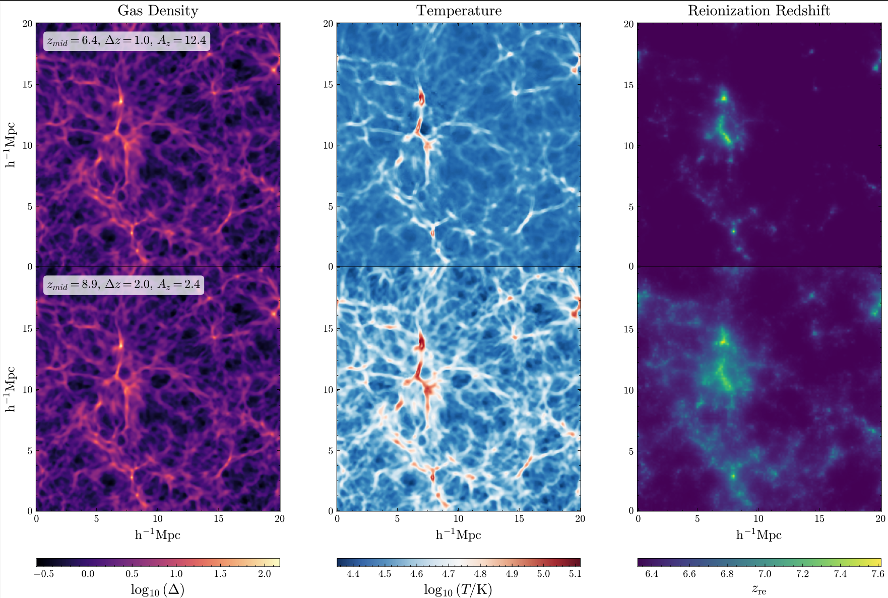
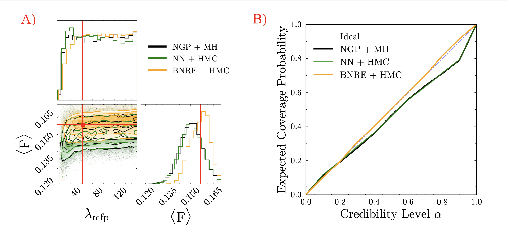
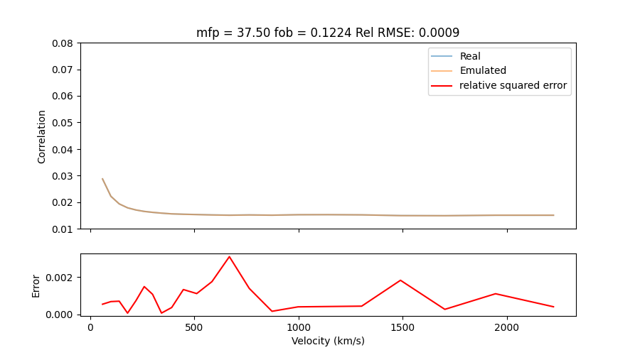

Current Research
As a member of the ENIGMA group, and under the supervision of Dr. Joseph Hennawi, my research focuses on finding novel applications of machine learning to study the Inter-Galactic Medium (IGM) and its evolution during the Epoch of Reionization (EoR).

Modeling the EoR
I'm in the process of creating a dataset of high-resolution hydrodynamical simulations that will be used to understand how different reionization histories affect the Lyman-alpha forest and measurements of its summary statistics. These simulations are being executed using the Frontier supercomputer at Oak Ridge National Lab.

Simulation-Based Inference
I've done preliminary work that demonstrates that applying Balanced Neural Ratio Estimation can be used to provide better constraints on cosmological problems. I'm currently working on expanding these results to apply this method to constrain the reionization history using the power spectrum of the Lyman-alpha forest.

Emulating the Lyman-alpha Forest
Using neural networks, I'm developing emulators for the mean autocorrelation function of the Lyman-alpha forest during the epoch of reionization and its corresponding covariance matrices. Taking advantage of the differentiability of neural networks, I'm also working combining these emulators with Hamiltonian Monte Carlo for a faster parameter inference.
Learn more
Past Research
Under the supervision of Dr. Alissa Bans, most of my undergraduate research focused on Young Stellar Objects (YSOs) and their circum-stellar environment.

Modeling MWC 297's circumstellar structure
MWC 297 is a Herbig Be star that possesses a complex circumstellar structure. For my undergraduate honors thesis, I adapted a Monte Carlo Radiative Transfer (MCRT) code combined with magnetically supported outflows to model MWC 297’s Spectral Energy Distribution (SED). I also developed a simple algorithm that uses the output from the MCRT code to reconstruct images in the Near Infra-Red (NIR). The results showed that magnetically driven outflows could greatly help explain parts of the circumstellar structures around higher luminosity stars that have a SEDs with NIR excess.
Learn more

Searching for new members of Star Forming Regions
Using a dataset from Disk Detective, I found new members belonging to 36 known Star Forming Regions. We made further studies in the variability of these objects using TESS and Kepler data when available.